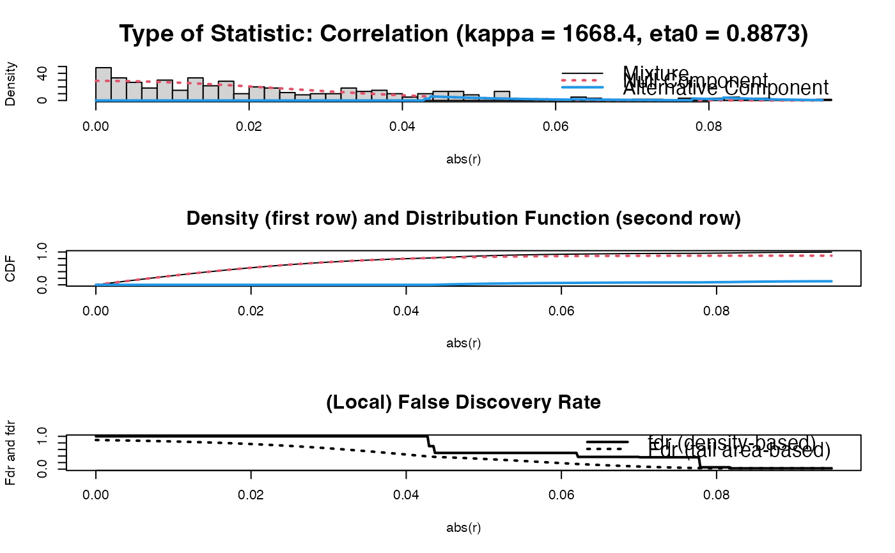

Function that visualizes a (precision) matrix as a heatmap. May be used to assess visually the elements of a single (possibly sparsified precision) matrix. May also be used in assessing the performance of edge selection techniques.
edgeHeat( M, lowColor = "blue", highColor = "red", textsize = 10, diag = TRUE, legend = TRUE, main = "" )
| M | (Possibly sparsified precision) |
|---|---|
| lowColor | A |
| highColor | A |
| textsize | A |
| diag | A |
| legend | A |
| main | A |
This function utilizes
ggplot2 (Wickham, 2009) to
visualize a matrix as a heatmap: a false color plot in which the individual
matrix entries are represented by colors. lowColor determines the
color scale for matrix entries in the negative range. highColor
determines the color scale for matrix entries in the positive range. For the
colors supported by the arguments lowColor and highColor, see
https://stat.columbia.edu/~tzheng/files/Rcolor.pdf. White entries in
the plot represent the midscale value of 0. One can opt to set the diagonal
entries to the midscale color of white when one is interested in
(heatmapping) the off-diagonal elements only. To achieve this, set
diag = FALSE. Naturally, the diag argument is only used when
the input matrix M is a square matrix.
The intended use of the function is to visualize a, possibly sparsified,
precision matrix as a heatmap. The function may also be used, in a graphical
modeling setting, to assess the performance of edge selection techniques.
However, the function is quite general, in the sense that it can represent
any matrix as a heatmap.
Wickham, H. (2009). ggplot2: elegant graphics for data analysis. New York: Springer.
Carel F.W. Peeters <cf.peeters@vumc.nl>, Wessel N. van Wieringen
## Obtain some (high-dimensional) data p = 25 n = 10 set.seed(333) X = matrix(rnorm(n*p), nrow = n, ncol = p) colnames(X)[1:25] = letters[1:25] Cx <- covML(X) ## Obtain regularized precision matrix P <- ridgeP(Cx, lambda = 10, type = "Alt") ## Obtain sparsified partial correlation matrix PC0 <- sparsify(P, threshold = "localFDR", FDRcut = .8)$sparseParCor#> Step 1... determine cutoff point #> Step 2... estimate parameters of null distribution and eta0 #> Step 3... compute p-values and estimate empirical PDF/CDF #> Step 4... compute q-values and local fdr #> Step 5... prepare for plotting#> #> - Retained elements: 11 #> - Corresponding to 3.67 % of possible edges #>## Visualize sparsified partial correlation matrix as heatmap edgeHeat(PC0)